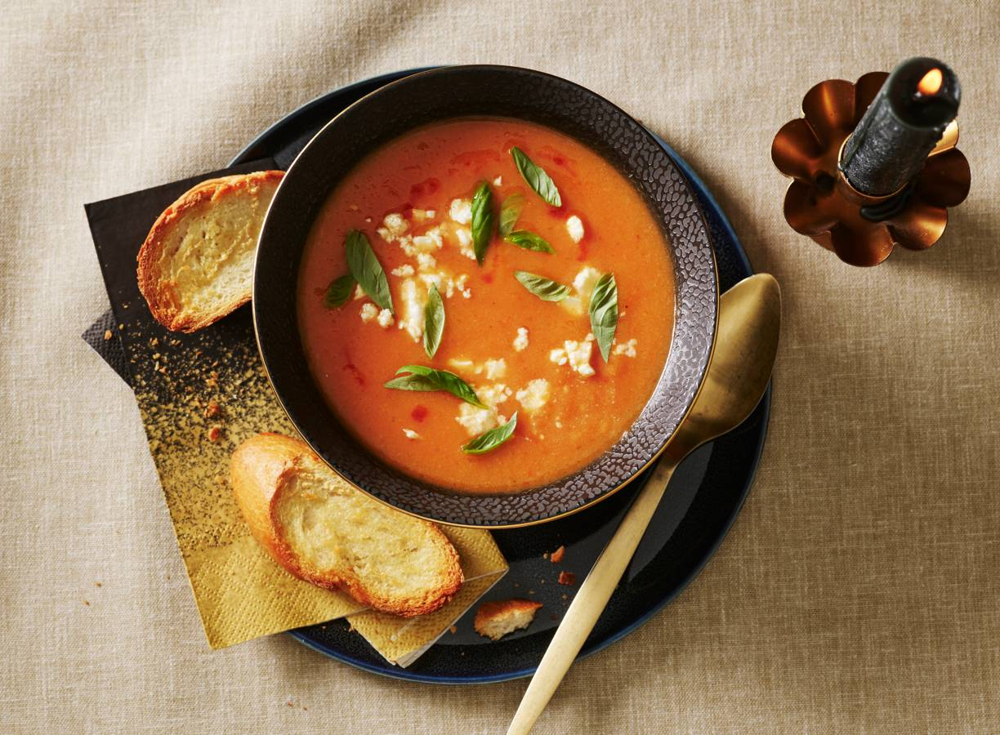

Geroosterde tomaten-chipotlesoep met pompoen en knoflookcrostini
Dit kruidige tomatensoepje leent zich uitstekend als vegetarisch voorgerecht.
Ingrediënten
2 trostomaten
1 middelgrote ui
200g koelverse muskaatpompoenstukjes
1 teen knoflook
1 eetlepel arachideolie
½ vers wit stokbrood
300ml water
½ groentebouillontablet
1 eetlepel La Morena chipotlesaus
25g AH Biologisch feta
7.5g verse basilicum
Bereidingswijze
Verwarm de oven voor op 220 °C. Halveer de tomaten en snijd de uien elk in 4 parten. Verdeel de pompoen, de tomaat met de snijkant naar boven, de ui en de helft van de ongepelde knoflook over een met bakpapier beklede bakplaat. Besprenkel met de helft van de olie, peper en eventueel zout. Rooster ca. 30 min. in het midden van de oven
Snijd ondertussen het stokbrood in 8 schuine plakken en verdeel over een met bakpapier beklede bakplaat. Pers de rest van de knoflook in een schaaltje en meng met de rest van de olie, peper en eventueel zout. Bestrijk de sneetjes brood met de knoflookolie en rooster de laatste 8 à 10 min. boven de groente in de oven.
Neem de bakplaten uit de oven en haal de ongepelde teen knoflook uit z’n velletje. Doe samen met de geroosterde groente (incl. het vrijgekomen vocht) in een soeppan. Voeg het water toe, verkruimel het bouillonblokje erboven en breng aan de kook.
Neem de pan van het vuur en pureer met de staafmixer tot een egale soep. Voeg de chipotle saus toe, verdeel over kommen en verkruimel de feta erover. Snijd het basilicum in reepjes en strooi over de soep. Serveer met de knoflookcrostini.

Tip Heb je geen 2 bakplaten? Gebruik dan 1 bakplaat en een ovenrooster bekleed met bakpapier.